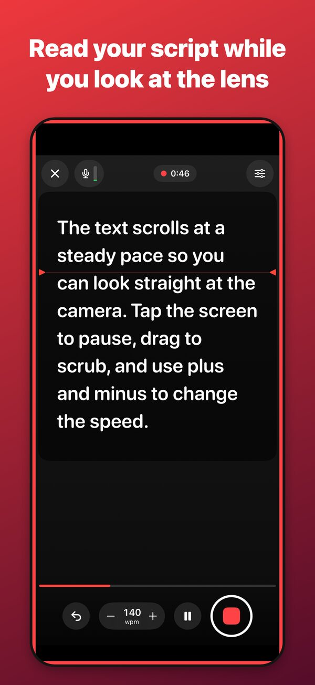
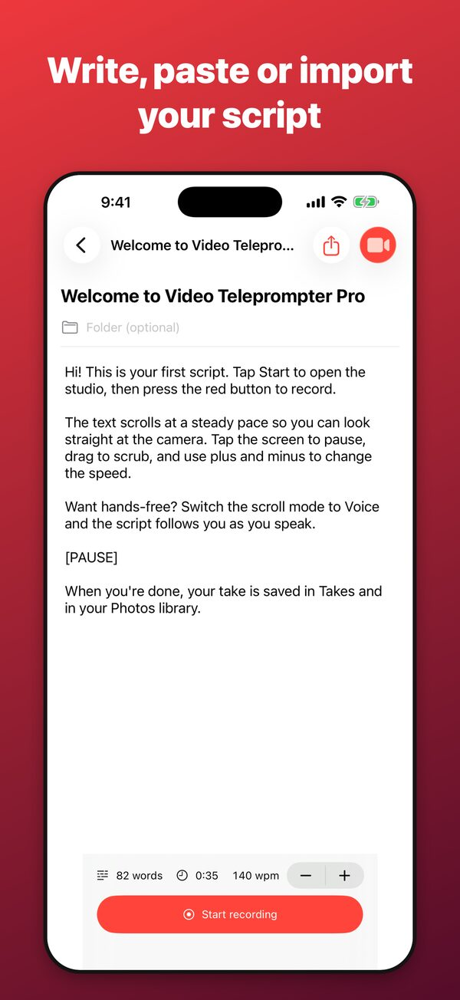
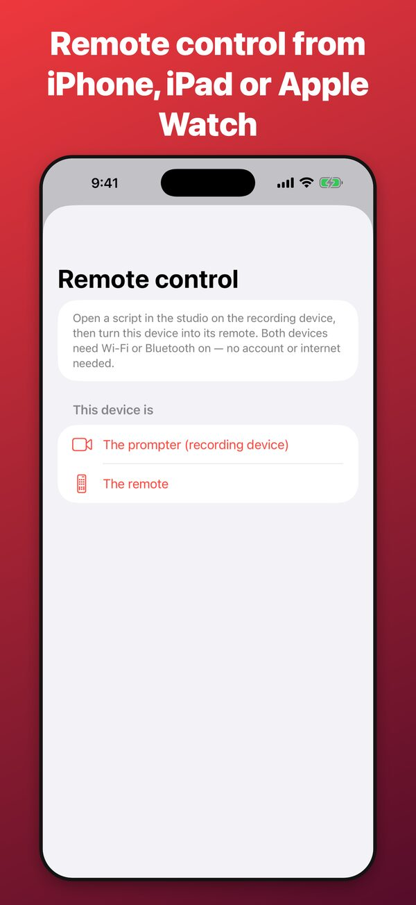
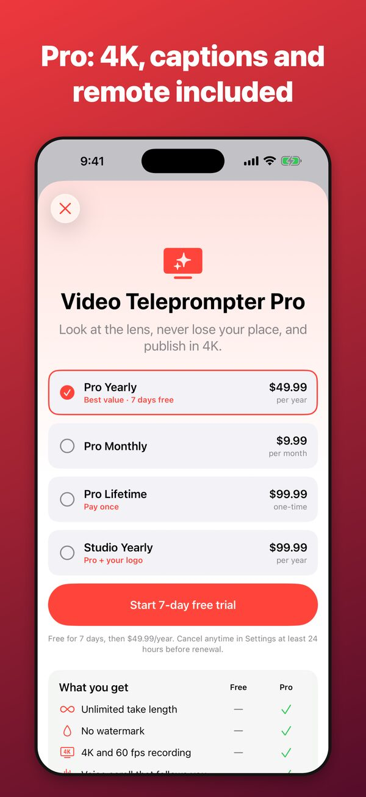

Record with a teleprompter in 5 steps
- Write or paste your script. Type it, paste it or import it. Short lines of 6-10 words read most naturally.
- Place the phone at eye level. Put the iPhone on a tripod at eye height, about an arm’s length away, with the front camera at the top.
- Set speed and text size. Start around 120-150 words per minute, use large text and keep the text column narrow so your eyes barely move.
- Record. Tap record. The text scrolls near the lens; tap to pause, drag to scrub, and use + and - to change speed.
- Control it remotely. Use a second iPhone, an iPad or Apple Watch as a remote to start, pause and adjust speed without touching the camera.
Who uses a teleprompter app
- YouTubers and creators: tighter talking-head videos, Shorts, TikToks and Reels with fewer retakes.
- Business presenters: product demos, investor pitches, sales videos and internal updates.
- Teachers and coaches: lessons and course videos.
- Speakers: rehearse talks, wedding speeches and interviews.
Tips to look natural
- Write the way you speak, and read the script aloud once before recording.
- Put the text as close to the camera as possible; the app keeps it right under the lens.
- Mark pauses with a line break and leave the speed a bit slower than feels natural.
- Record in short sections and join them later instead of one long take.
Free vs Pro
The free version includes the teleprompter and recording. Pro adds 4K recording, automatic captions, remote control and iCloud sync across iPhone, iPad and Mac.
FAQ
Can I read the script and look at the camera at the same time?
Yes. The text scrolls right below the front camera, so your eyes stay close to the lens while you read.
Can I control the teleprompter with Apple Watch?
Yes. Apple Watch, a second iPhone or an iPad can start, pause and change the speed.
Does it work on Mac?
Yes. Video Teleprompter Pro runs on Mac too, and Pro can keep scripts in sync across your devices with iCloud.
What is a good scroll speed?
Most people read comfortably at 120-150 words per minute on camera. Adjust live with + and -.
Video Teleprompter Pro — teleprompter and camera in one app for iPhone, iPad, Mac and Apple Watch.